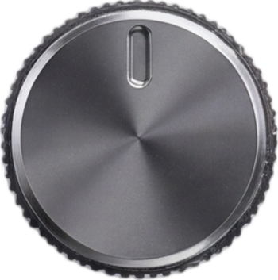
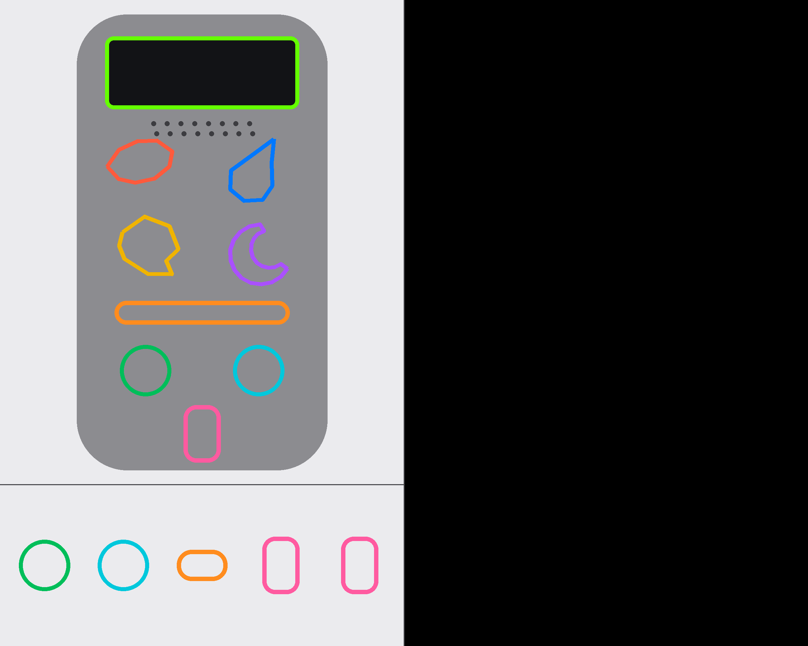
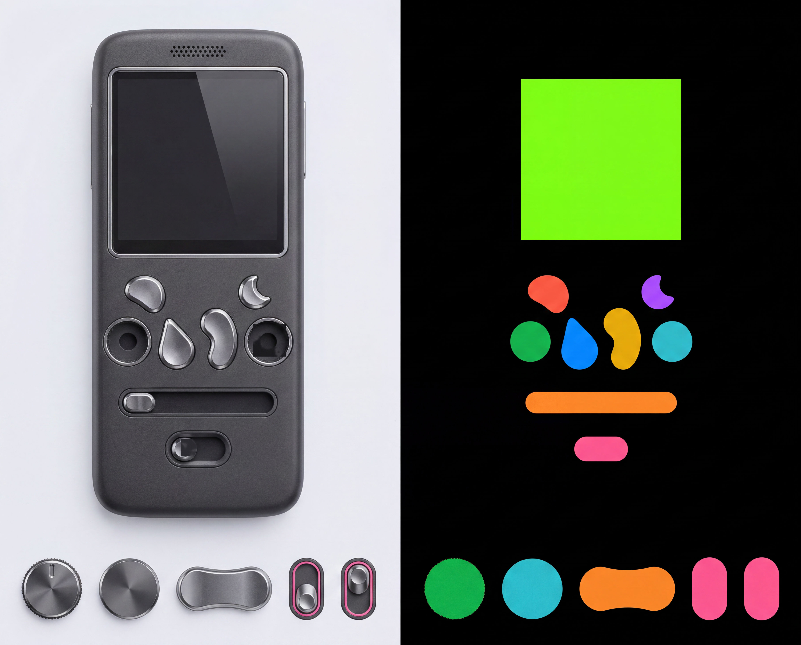
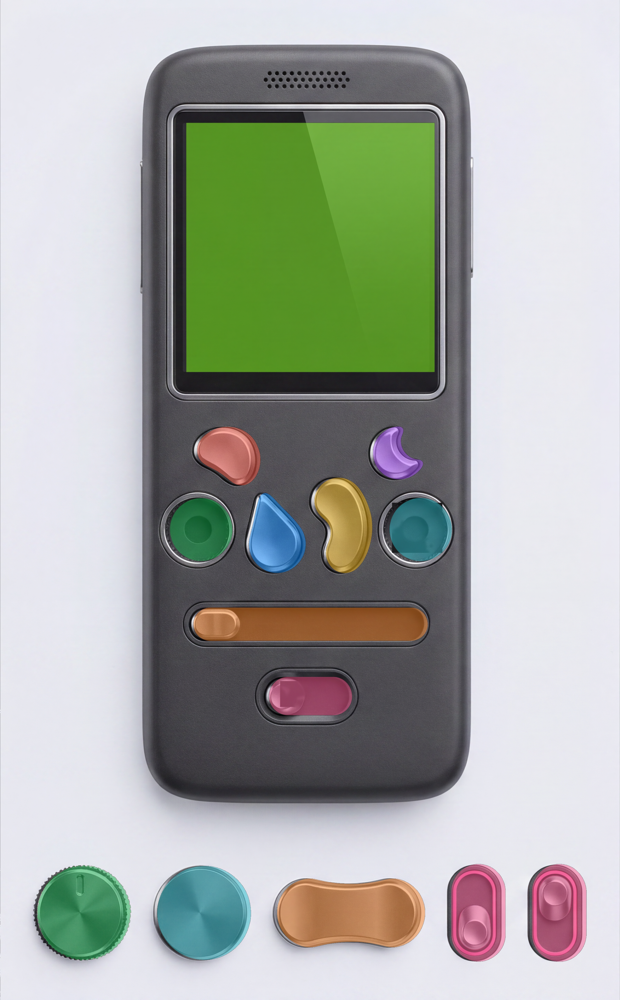
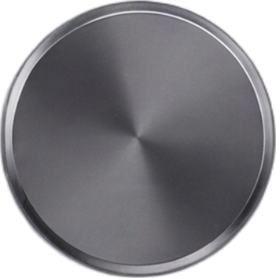
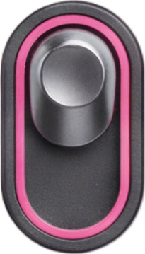
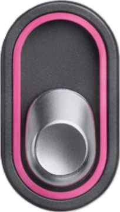
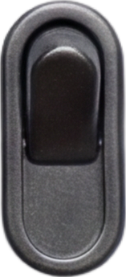
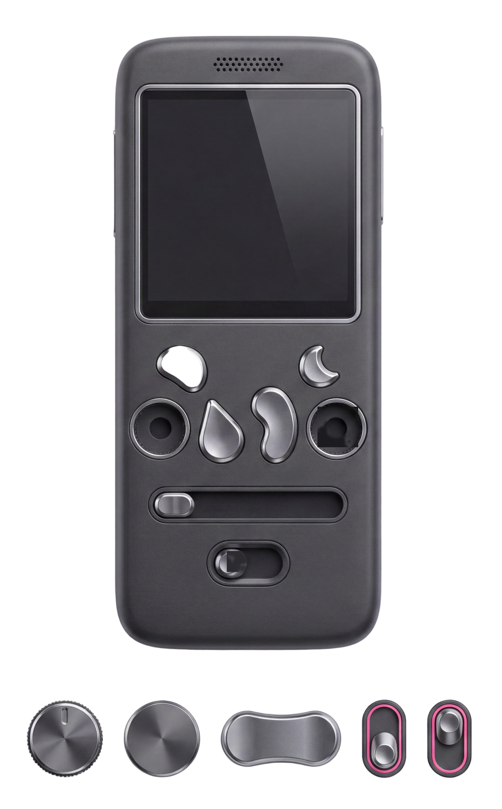
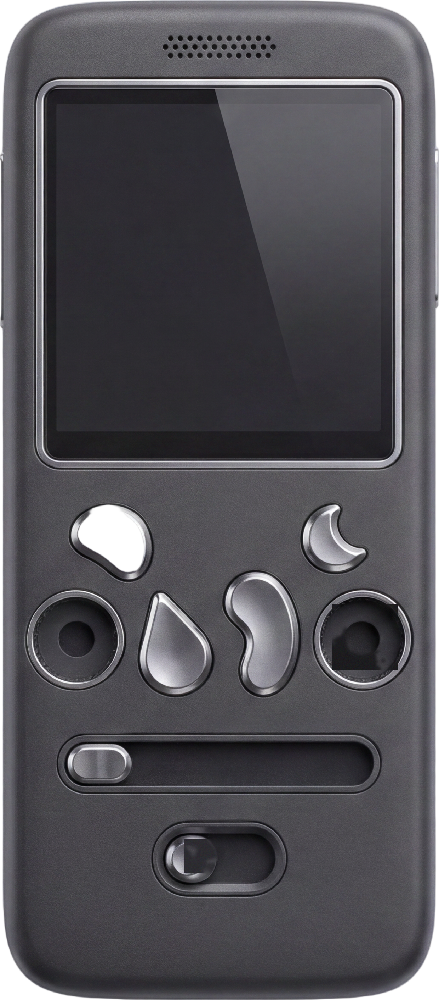

vol cap · global-CC island
Stress test of the run8 pipeline on a NEW device design: an early-2000s cell-phone / walkman hybrid whose four transport buttons are organic shapes — a pebble, a teardrop, a kidney bean, a crescent — deliberately non-circular and non-rectangular. Same contract: LEFT = monochrome painted device + sprite strip on flat charcoal; RIGHT = colour-keyed region mask on pure black. One generation was needed.
model: fal-ai/gemini-3-pro-image-preview/edit (nano-banana pro) · 4K · 5:4 · seed 41 · material: Y2K gunmetal graphite + chrome


ONE BiRefNet call (fal-ai/birefnet/v2 Heavy 2048, 3.9 s, ~$0.004)
over the whole paint → the matte's connected-component islands, each correlated to its identity via the mask strip cells
(centroid match, never left-to-right order). These are the real cuts — no client-side luma key.





The raw single-pass matte (checkerboard = removed backdrop) and the largest island — the whole device body — from the same call. One ~$0.004 pass cuts the body AND all five parts.


| control | template→mask drift % | mask→skin residual % (x, after snap) | snap |
|---|
The pipeline held on organic button shapes — 1 generation, no regenerations. The model preserved all four irregular outlines (pebble / teardrop / kidney / crescent) in both the paint and the mask, kept the seek groove completely empty, and produced exactly five top-down strip parts in one row with distinct toggle OFF/ON states. Mask correlation is excellent: template→mask drift averages 0.3% (max 0.5%), and nearest-colour + largest-connected-component extraction found all 8 device regions and all 5 strip cells.
What broke — two things, neither caused by the organic shapes:
(1) toggle strip mask cells came back as outline frames + disconnected lever blobs (4 pink components instead of 2),
so extract8's "first two components by x" picked the OFF frame + OFF lever and mis-cropped the toggle-ON sprite; fixed in
extract9 with a binary_fill_holes before labeling (no-op on run8-style solid cells).
(2) the snap-x refinement is a no-op for the buttons: with no embossed icons (monochrome chrome facets,
shape-only), there are no saturated pixels to snap to, so button placement falls back to the raw mask bbox —
acceptable here (button mask drift ≤0.5%) but it means the drift-cancelling snap only protects the sockets on
icon-less designs. A stray sub-threshold red blob also appeared in the mask strip band (harmless, filtered by the CC
size gate).
The end of the chain: device background from the paint, sprites = the global-BiRefNet islands. Knobs seat in the measured painted wells — each socket is an enclosed alpha-hole in the global matte's device island, whose inscribed circle (centre + radius) is the exact painted socket geometry; no bbox scale factors. Drag the knobs (pinned specular), drag the seek thumb, click the toggle (its two painted states), press the organic buttons (mask-silhouette darkening).